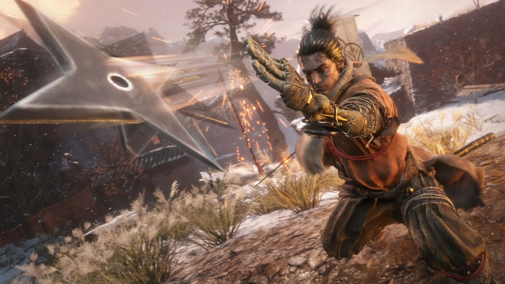
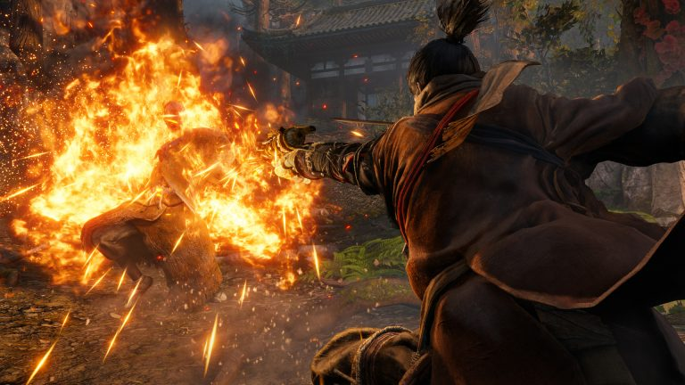
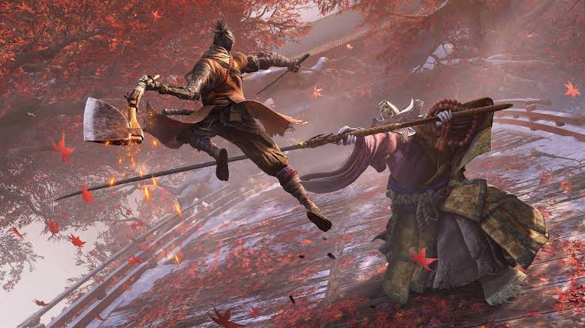
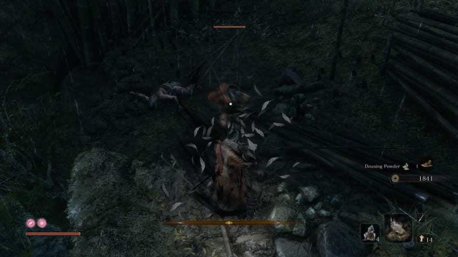
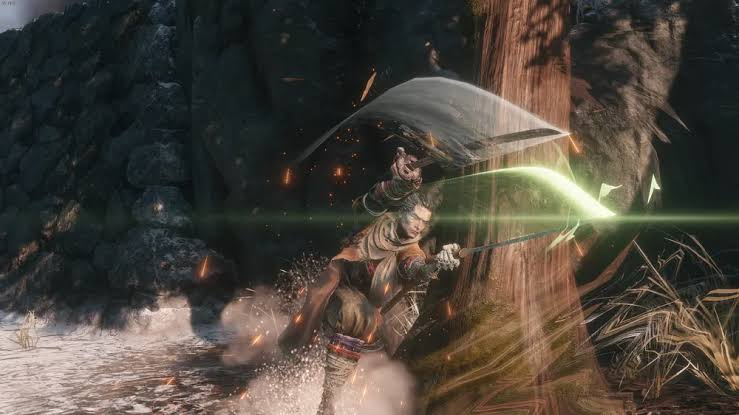
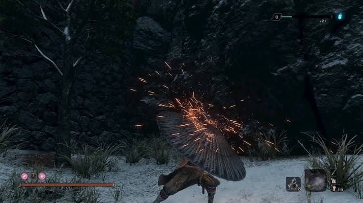

Loaded Shuriken
This one is hard to miss. You can find the Loaded Shuriken in the Ashina Outskirts region, at the beginning of the game. Use your grappling hook to jump onto the roof or enter through a hole in the wall on the upper floor. Then, go back to the Dilapidated Temple and give it to the Sculptor to fit it onto your prosthetic arm.
This tool can one-shot weak enemies, like dogs, for example. In fact, before you find it, there is a group of dogs patrolling the area. It seems weak compared to other tools, but it is not the case. The shuriken is exceptionally good against agile enemies, like the Lone Shadows, an elite group of shinobi agents who serve the Interior Ministry.
Lady Butterfly, an optional boss from the Hirata Estate memory area, suffers against this tool, as it can easily interrupt many of her aerial attacks at the cost of just one Spirit Emblem. Its cost is low, but its versatility is quite unique. Never underestimate what a shinobi can do with his shurikens.

Shinobi Firecraker
Another Prosthetic Tool that is hard to miss. This one you cannot find exploring, you have to buy from a Merchant located in the Ashina Outskirts. Proceed past the area with the first mini-boss (General Naomori Kawarada), look to the left before passing though a gate with a cannon-wielding enemy and use your grappling hook on the elevated trees or stone structures. Follow the path up and you should find a small tent where you can purchase Robert's Firecrackers.
This tool is excellent against beast-type enemies, as they get scared easily with the sound. It makes their postures break easily, forcing a long flinch animation. Even Guardian Ape, one of the most memorable and hard bosses, gets scared by the sound of it. It can also stun human enemies, giving you a safe window to attack or heal.
At the cost of just one Spiritual Emblem, you can easily stun almost anything that crosses your path. Its versatiliy allows you to use the tool both ofensively and defensively, whether you want to attack the enemy or heal yourself. The Robert's Firecrackers Item, necessary to install the Prosthetic Tools, costs 500 sens, which is a low price. Go get some money and this Prosthetic Tool is yours. In order to achieve his goals, a good Shinobi is not afraid of distracting his enemies.

Flamevent
This one is, chronologically, the first Tool you can find within Hirata State memory. By progressing through the stage, you will find a campfire surrounded by a group of bandits and axe/katana guards. Clear out the enemies (or sprints/lure then away) and interact with the fire to loot the Flame Barrel. Then, you know what to do: go back to the Sculptor and he will build the Flame Vent using the Flame Barrel.
This Tool is extremely powerful. It drains vitality over time and prevents enemies from recovering posture, which is more important than the health bar in this game. It causes heavy flinching, panic and massive damage against Red-Eyes enemies, like the Chained Ogre and other beasts. With the Living Force skill, you can ignite your own Katana with fire. Here, fire frightens even the most terrifying enemies.
Unlike other Tools, and the ones i have mentioned before, this one costs three Spiritual Emblems. It is recommended to use it wisely, as it can drain your emblems pretty quick if you keep spamming. If timed poorly, it will leave vulnerable to enemy attacks. Being vulnerable in the world of Sekiro means you are dead, so try to use it properly, because this is a game-changing tool.

Loaded Axe
The Loaded Axe is, chronologically, the second Tools you can find within Hirata Estate. Its location lies close to the last one, where we found the Flame Vent. By progressing, you will find small courtyard on the right featuring a small garden shrine house guarded by two talking bandits/enemies. You can easily kill or lure them. Then, open the small shrine door and pick up the Shinobi Axe of the Monkey. Then, take the item to the Sculptor.
This tool is ridiculous. Its heavy-damage it is so brutal it can one-shot shield and hat enemies. This top-tier performance weapon deals both massive posture and vitality damage. Once it hits, the enemies will very likely feel the impact of your game-changer toy. Combining it with the Fang abd Blade skill lets you chain an axe smash directly into a dual-sword lunge.
I talked about the pros of this Tools, but it does have its cons. The slow animation easily leaves the player vulnerable, which is the last thing you want in a game like Sekiro. Agile enemies can sidestep, dodge if you do not time the attack correctly. Each attack consumes 2 Spirit Emblems, which is less than the Flame Vent, but spamming it quickly drains your limited pool. A good shinobi should not be afraid of striking hard.

Mist Raven
Mist Raven is the third and final Prosthetic Tool you can find within Hirata Estate. It is the easiest to miss, so be careful. Head to the Bamboo Thicket Slope idol, grappke left and swim upstream to a tree branch, follow he shore and slash through bamboo into a cave, wall-jump up to the cliff, then fight or run past the purple Lone Shadow ninja to the pagoda and grab the Mist Raven's Feathers — return them to the Sculptor at the Dilapidated Temple to craft the Mist Raven.
This Tool is underrated. It is versatile, stylish and a safe way to vanish through almost any physical attack, granting complete invulnerability. It can even reverse lightning, which is insane. If timed correctly, you will redirect the eletricity back to Genichiro/Isshin. It is to the player to choose a direction to teleport, which shows the Tool's versatility. It is the most "ninja" Tool out of the ten.
Although is very cool to use, some player view it as flashy rather than optimal. If you have mastered deflects and mikiri-counter, you are unstoppable. At the cost of two Spirit Emblems, the player must pay attention in order to not drain it all. It also requires precise timing and intentional directional input (or zero to go straight up). Use it wisely and you will fell like an anime character.

Loaded Spear
Back to the present, progress through the Ashina Outskirts and defeat Gyoubu Masataka Oniwa. Proceed to Ashina Castle and cross the main bridge to the left. Kill the two soldier there to obtain the Gatehouse Key, a necessary item in order to have the spear. By going to the Ashina Reservoir, the area where you started the game, you will see a locked gatehouse (the building you crawled under at the very start of the game) and use the key to open it. There, you will collect the Gyoubu's Broken Horn. Return to the Dilapidated Temple and speak to the Sculptor to craft the Loaded Spear.
As a long range weapon, this tool is excellent for hitting enemies that are trying to back away. It can also drag smaller enemies straight to you, letting you close the gap fast. When fighting the second phase of Guardian Ape, he will try a big overhead slam attack and, if you deflect it, he will fall. Use the pull-back twice on his neck in order to rips out the centipede, dealing absurd posture damage.
Costing only one Spirit Emblem per use, the Loaded Spear is quite strong and versatile. Be aware that this Tool is slow, making it hard to land attacks against fast enemies, like the Lone Shadows and the two Centipedes, for example. A wrong timing will leave the player vulnerable and, in the world of Sekiro, vulnerability equals death. When the Loaded Spear extends, the death draws near.

Sabimaru
This beauty is located inside Ashina Castle. It is hidden inside a chest on the bottom floor of the castle's main keep. Be aware that enemies are waiting and, if you are in the middle of the game, prepare yourself to fight a Chained Ogre. Use your grappling hook and try to fall safely, otherwise you will take fall damage. Oncle you clear the enemies (or the Ogre), head into the small adjoining room directly off the main bottom floor area. You will find a large treasure chest sitting next to an decorative set of armos. Open the chest to obtain the Sabimaru. Take the item back to the Sculptor to fit it to your prosthetic arm.
Sabimaru's gameplay pros are that its rapid multi-hit combo builds poison status quickly to deal percentage-based damage over time against high-health enemies, it shreds poison-weak foes like Okami Warriors, O'Rin, and Snake Eyes. This is a situational and fun shinobi Prosthetic Tool, rather than a universally broken weapon. With its 6-hit (or more, when upgrades) combo, Wolf will attack aggressively and pressure human-sized enemies.
If timing is poor, you can be locked into a combo chain, meaning you can easily get hit. If the enemy resists poision, there is basically no point using this Tool, and its high Spiritual Emblem cost makes it a wasteful choice agaisnt foes that are not poison weak.

Loaded Umbrella
